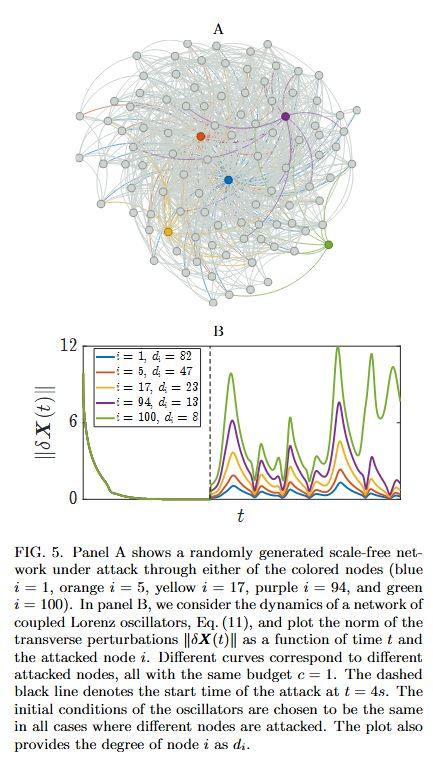

<div id="portfolio-page" class="portfolio-page-content">
    <div class="container">
        <div class="portfolio-nav">
            <div id="portfolio-close-button" class="portfolio-close-button">
                <a href="#portfolio"><i class="fa fa-close"></i></a>
            </div>
        </div>

        <div class="portfolio-title">
            <h1>Portfolio Project</h1>
        </div>

        <div class="row">
            <div class="col-sm-7 col-md-7 portfolio-block">
                <div class="owl-carousel portfolio-page-carousel">
                    <div class="item">
                        
                    </div>
                    <div class="item">
                        
                    </div>
                </div>

                <script type="text/javascript">
                    jQuery(document).ready(function($){
                        $('.portfolio-page-carousel').owlCarousel({
                            smartSpeed:1200,
                            items: 1,
                            loop: true,
                            dots: true,
                            nav: true,
                            navText: false,
                            margin: 10
                        });
                    }); 
                </script>
            </div>

            <div class="col-sm-5 col-md-5 portfolio-block">
                <!-- Project Description -->
                <div class="block-title">
                    <h3>Description</h3>
                </div>
                <ul class="project-general-info">
                    <li><p><i class="fa fa-user"></i> Collaborators:  Amirhossein Nazerian, Malbor Asllani, David Phillips, Hernan Makse, Francesco Sorrentino</p></li>
                    <li><p><i class="fa fa-calendar"></i> July 2024 - November 2025</p></li>
                </ul>

                <p class="text-justify"><p>   Consensus, synchronization, formation control, and power grid balance are all examples of virtuous dynamical
                                              states that may arise in networks. Here we focus on how such states can be destabilized from a fundamen-
                                              tal perspective; namely, we address the question of how one or a few intruder agents within an otherwise
                                              functioning network may compromise its dynamics. We show that a single adversarial node coupled via
                                              adversarial connections to one or more other nodes is sufficient to destabilize the entire network, which we
                                              prove to be more efficient than targeting multiple nodes. Then, we show that concentrating the attack on a
                                              single low-indegree node induces the greatest instability, challenging the common assumption that hubs are
                                              the most critical nodes. This leads to a new characterization of the vulnerability of a node, which contrasts
                                              with previous work, and identifies low-indegree nodes (as opposed to the hubs) as the most vulnerable compo-
                                              nents of a network. Our results are derived for linear systems but hold true for nonlinear networks, including
                                              those described by the Kuramoto model. Finally, we derive scaling laws showing that larger networks are less
                                              susceptible, on average, to single-node attacks. Overall, these findings highlight an intrinsic vulnerability of
                                              technological systems, such as autonomous networks, sensor networks, power grids, and the internet of things,
                                              with implications that extend also to the realm of complex social and biological networks.</p>
                <!-- /Project Description -->

                <!-- Technology -->
                <div class="tags-block">
                    <div class="block-title">
                        <h3>ُSoftware and Framewokrs:</h3>
                    </div>
                    <ul class="tags">
                        <li><a>MATLAB</a></li>
                        <li><a>YALMIP</a></li>
                        <li><a>MOSEK</a></li>
                    </ul>
                </div>
            </div>
        </div>
    </div>
</div>
